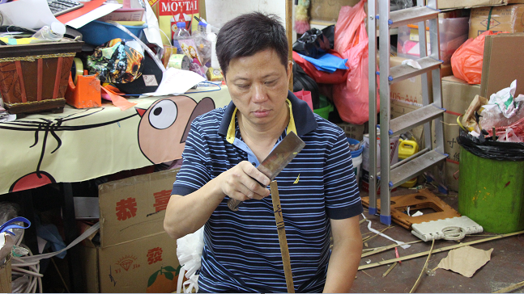
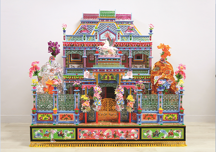

BREAKING THE TRADITIONS: PAPER OFFERINGS AS ART?
In every traditional Chinese festival, paper offerings for celebration or the worship of spirits can be seen everywhere.
“Paper offerings are not only about funeral affairs. We do paper offerings for the Mid-Autumn Festival, the Tai Hang Fire Dragon Dance, and even for Chinese New Year,” said Mr Ha Chung-kin, the traditional paper craftsman.
He said there were two factions in the paper offering industry in the past – paper offerings for celebrations and those for funeral purpose.
“We cannot make paper offerings for both occasions [at the same time] as people think it is ominous,” he said. “But now, we do everything together, people don’t mind.”
The culture of paper offerings is believed to have started with a concept brought along by Confucianism, introduced in the Spring and Autumn period, according to Dr Tam yik-fai, from the Department of Religion and Philosophy at Hong Kong Baptist University.
“In the ‘Book of Rites’ by Confucius, the master once said that we should respect spiritual beings with containers,” said Tam. “As Confucius starts to distinguish human beings and the spirits as two different existences. The containers for spirits must be different from those we used,”
Before that, most Chinese tended to use the same offerings, for example, meat, fruit, or even humans – which they were presenting to a higher hierarchy – the spirits.
Although Confucius did not state specifically that we should use paper to make offerings, the plant and common reed that he mentioned is believed to be an early sample of paper offerings.
Until modern age, paper offerings have experienced a striking development in different parts of China, with great diversity since their introduction in the Spring and Autumn period.
For example, people in Tianjin use joss paper cows as offerings, those in Chaozhou present joss paper water buckets and streamers to the spirits, while people in Fujian make joss paper lamps for their spirits.
“There are over a hundred types of paper offerings due to cultural diversity. We create different paper offerings for different places and occasions,” Ha said.
Paper offerings are designed for the spirits. Family and friends of the deceased would order customized offerings for their beloved ones.
According to Tam, the Chinese believe the world of spirits is the reflection of the human world. Therefore, people would make paper offerings similar to the materials they have in daily life.
The most common paper offering, joss paper doll, is an implication of a servant in the traditional Chinese society; and the trendy joss paper iPhone, is a reflection of the luxurious enjoyment in the digital age.
Nowadays, paper offerings are not limited to Chinese festivals and the spirits. We can also see them during Western festivals like Christmas and Halloween.
In 2015, artist Fong Tong-shing of the online video platform TVMost even ordered a joss paper doll of himself for the promotion in the book fair. His related post on Facebook didn’t scare people, but gained around 2500 likes, which was much higher than his other posts.
Ha had once created a large-scale paper Frankenstein and a mummy for a Halloween party, and a giant Santa Claus placed outside the Hong Kong and Shanghai Banking Corporation headquarters in Central.
“Paper offerings can be in any format and for different uses. It is art and we can think out of the box!” he said.
Recently, Ha has been offering classes to pass on the skills of making these paper offerings. He has had a positive response from the public as all his classes are full.
Mr Patricio Sarmiento agrees. He is a curator for the exhibition “Unfold Taiwan” held in Decorative Arts Museum of Paris, also sees paper offering as an art.
Patricio is not afraid of the Asian taboos that paper offerings may bring people bad luck, even though the Taiwanese Embassy had once gave him a warning when he showed interested in exhibiting the paper offerings.
“Bad luck is very cultural, we don’t share the same history and belief, so I think it is okay,” Patricio said.
Patricio introduced paper offerings as one of the focusing exhibitions in this D’Days design festival, which has been held since 2000 to celebrate design and creation all over Paris on an international level. On one of his trip to Taiwan, he witnessed the burning of paper offerings and he felt the art value inside.
“Chinese paper offering is an art, a history, a tradition and a practice of contemporary design use in paper,” Patricio said. “This shows a very deep relationship between paper and human beings on a spiritual level.”
The paper offerings are regarded as a bridge between human beings death. By burning the paper offerings, the Chinese believe that we can transfer the materials to the afterlife world.